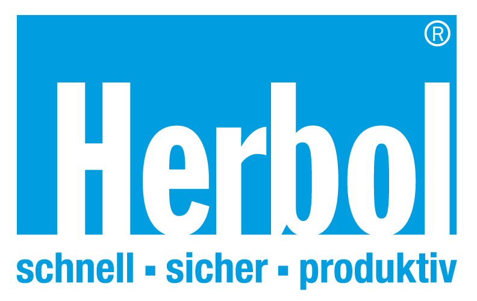

Farben & Lacke kaufen in Graz
Warum sich im Baumarkt mit mittelmäßiger Qualität zufrieden geben? Bei uns erhalten Sie dieselben Farben, Lacke und Lasuren, die wir als Profis täglich einsetzen. Höhere Deckkraft, bessere Haltbarkeit und kompetente Beratung inklusive.
Sikkens
Die erste Wahl für Profis. Höchste Deckkraft und Langlebigkeit. Individuelle Farbmischung direkt bei uns vor Ort möglich!

Herbol
Innovative Beschichtungssysteme für rationelles und wirtschaftliches Arbeiten in bester Qualität.
Keim Mineralfarben
Der Goldstandard für ökologisches Bauen. Rein mineralisch, extrem atmungsaktiv und allergikerfreundlich. Perfekt für ein gesundes Raumklima und höchste Langlebigkeit.
Verantwortungsvolle Entsorgung
Umweltschutz endet bei uns nicht beim Verkauf. Wir übernehmen für Sie die fachgerechte und umweltschonende Entsorgung von bei uns gekauften Farbresten und Gebinden. Sauber, sicher und ökologisch korrekt.
Abholung nach Feierabend
Ihr Projekt hält sich nicht an Öffnungszeiten? Kein Problem. Nach vorheriger Absprache bieten wir Ihnen die Möglichkeit, Ihre bestellten Farben auch außerhalb unserer Geschäftszeiten kontaktlos abzuholen.
Interaktiver Farbrechner
Planen Sie Ihr Projekt? Berechnen Sie hier schnell und einfach, wie viel Farbe Sie für Ihre Räume benötigen.
Empfohlene Menge für Ihr Projekt
Fachberatung vor Ort
Kommen Sie in die Schörgelgasse 7. Wir mischen Ihnen nicht nur den passenden Farbton, sondern geben Ihnen auch die richtigen Tipps für die Verarbeitung mit. Welcher Pinsel? Welche Grundierung? Wir lassen Sie nicht im Regen stehen.
Sie wollen nicht selber malen?
Nutzen Sie unseren Full-Service: Farbe aussuchen und direkt vom Meisterbetrieb streichen lassen. Wir erledigen alles fachgerecht, sauber und zum fairen Preis.
Kostenloses AngebotEchte Erfahrungen
"Sehr fachkundige, kompetente und ausführliche Beratung. Auf Kundenwünsche wird optimal eingegangen. Zuverlässig, sauber und vor allem zügig erledigt. Absolut zu empfehlen!"
Weitere Leistungen
Fassadensanierung
Wetterschutz und Ästhetik für Ihre Immobilie. Wir schützen Ihre Bausubstanz nachhaltig.
Mehr erfahren →Kreative Innenmalerei
Exklusive Wandgestaltung und moderne Akzente für Ihre Wohnräume.
Mehr erfahren →